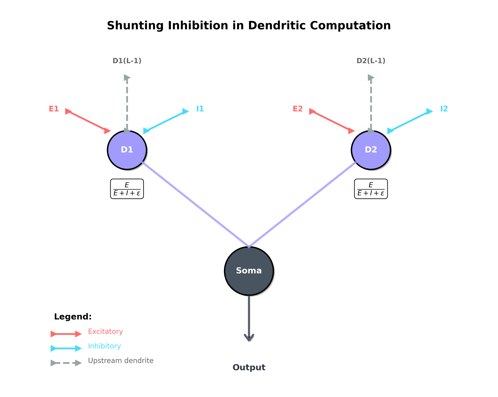
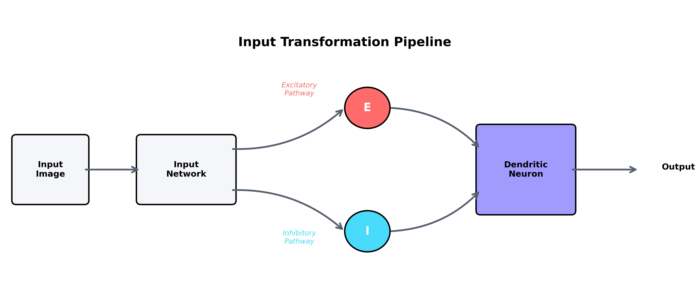

Architecture Overview
The dendritic modeling framework implements biologically-inspired neural networks based on dendritic computation with shunting inhibition. This architecture enables neurons to perform divisive normalization through the interaction of excitatory and inhibitory inputs.
Core Concepts
Dendritic Neuron Model
The fundamental computational unit in our framework is the dendritic neuron, which implements shunting inhibition (divisive normalization):

Basic Dendritic Neuron: Shows excitatory (red triangles) and inhibitory (blue circles) synaptic inputs arriving at dendritic branches. Each dendrite performs divisive normalization computation locally, and the soma integrates the processed outputs from all dendrites.
Each neuron computes its output using the formula:
where: - \(E\) is the sum of excitatory inputs - \(I\) is the sum of inhibitory inputs - \(\epsilon\) is a small constant for numerical stability
Shunting Inhibition Mechanism
Shunting inhibition provides a biologically plausible mechanism for gain control and normalization:


Shunting Inhibition in Dendritic Processing: Shows how dendrites perform shunting inhibition computation. Each dendrite receives excitatory and inhibitory synaptic inputs and computes the divisive normalization locally. Dendrites can also receive inputs from previous dendritic layers. The soma integrates the processed outputs from all dendrites.
Network Architecture
Input Transformation Pipeline
The framework processes inputs through a specialized pipeline that separates excitatory and inhibitory pathways:


Input Transformation: Input images are processed through an input network that generates separate excitatory and inhibitory signals, which then feed into dendritic neurons implementing divisive normalization.
Multi-Layer Networks
Complex computations are achieved by stacking multiple layers of E/I neurons:

Multi-Layer E/I Network: Shows how excitatory (red) and inhibitory (blue) neurons are organized in layers. Each E neuron implements the divisive normalization computation. Connections show feedforward excitation and lateral inhibition patterns.
Complete Architecture Flow
The complete network architecture integrates all components:

Complete Architecture: Shows the full pipeline from input through the input network, E/I separation, multiple dendritic layers, to final output. Each layer implements the core divisive normalization computation.
Computation Flow
The dendritic computation flow shows how synaptic inputs are processed:

Computation Flow: Illustrates how multiple excitatory and inhibitory synaptic inputs are received by dendrites, summed separately at each dendrite, and then combined through shunting inhibition division to produce each dendrite’s output voltage.
Implementation Details
Key Classes
The framework provides several key classes for building dendritic networks:
DendriticLayer: Base class for layers implementing dendritic computation
ExcitatoryInhibitoryLayer: Implements E/I separation and processing
InputTransformNetwork: Converts inputs into E/I signals
DendriticMLP: Multi-layer perceptron with dendritic neurons
Example Usage
Here’s a simple example of creating a dendritic network:
import torch
from dendritic_modeling.networks.architectures import DendriticMLP
# Create a 3-layer dendritic network
model = DendriticMLP(
input_size=784,
hidden_sizes=[128, 64],
output_size=10,
activation='relu',
use_dendritic=True
)
# Forward pass
x = torch.randn(32, 784) # batch of 32 images
output = model(x)
Biological Inspiration
The architecture is inspired by several biological principles:
Dendritic Integration: Real neurons integrate inputs on their dendritic trees
Shunting Inhibition: A common mechanism in the brain for gain control
E/I Balance: The balance between excitation and inhibition is crucial for neural computation
Divisive Normalization: A canonical computation in sensory systems
Applications
This architecture is particularly well-suited for:
Modeling visual neuron responses (simple cells, complex cells)
Implementing biologically plausible CNNs
Studying normalization mechanisms in neural networks
Building interpretable models with clear computational principles
Next Steps
Quick Start Guide - Get started with the framework
Networks API Reference - Detailed API documentation
Configuration System - Advanced configuration options